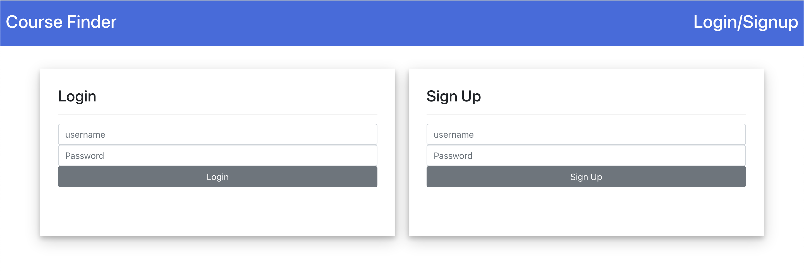
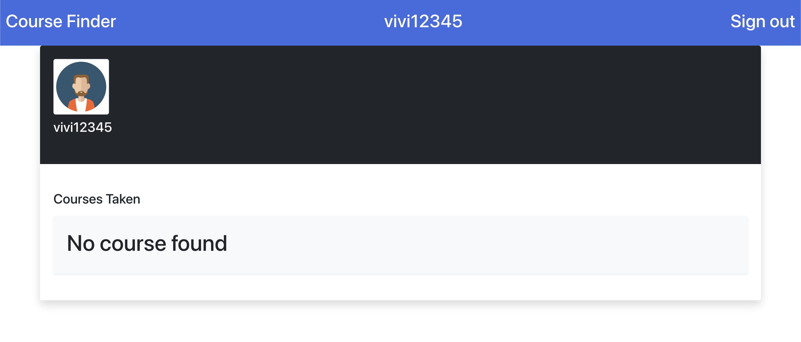

PostgreSQL Project: Columbia Course Search
Group member: Jinsen Wu, Hsing-wen Hsu
Introduction
A refinement of Columbia's Course searching website
We designed the relational database of the departments, course, students, professors...with PostgreSQL
At Columbia, a department has multiple tracks. Each track has different course requirements for graduation.
Deciding whether or not one should take a course is very time-consuming because one can spend hours going back and forth between the course requirement form and the course index page for the coming semester.
Therefore, we proposed this website, where student can query courses based on their tracks. In addition, students can leave comments for a course so that other students can reference them.
Tools
- PostgreSQL
- Python (Flask)
- ReactJS
- TypeScript
- Google Cloud Platform
Features
A login system for students to keep their own enrollment information and leave comments

